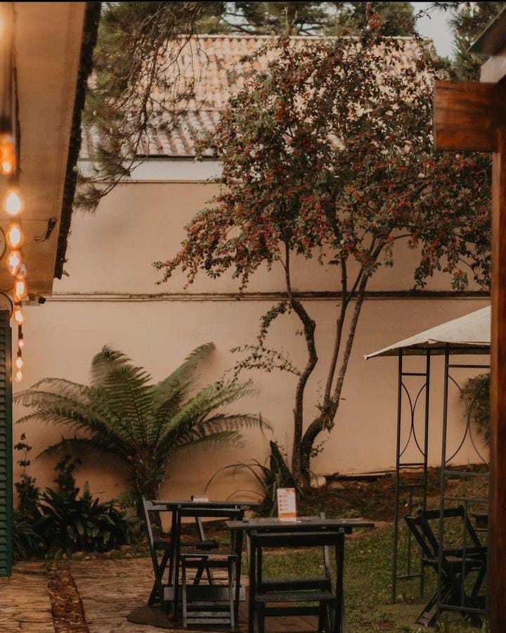

Conheça Nosso Espaço
Explore as imagens acolhedoras do nosso café.



Cardápio Café
- ● Caffe Latte
- ● Cappuccino Italiano
- ● Cappuccino Misturinha
- ● Espresso Carioca
- ● Espresso Curto
- ● Espresso Duplo
- ● Espresso Duplo Carioca
- ● Espresso Lungo
- ● Macchiato
Cardápio de Chá
- ● Kruger
- ● Chai
- ● Twinings
Cardápio de Salgados
- ● Pão de Queijo
- ● Coxinha
- ● Croissant de Manteiga
- ● Quiche de Alho-Poró com Bacon
- ● Empadão de Frango com Requeijão
- ● Pão de Batata com Requeijão
- ● Pão de Batata com Costela Desfiada
- ● Pão de Queijo Recheado
Horários e Endereço
Ter. á Sab. • 9h às 20h
Domingo e Feriados • 10h às 18h
Rua João Eloy Cardoso 182, Curitiba